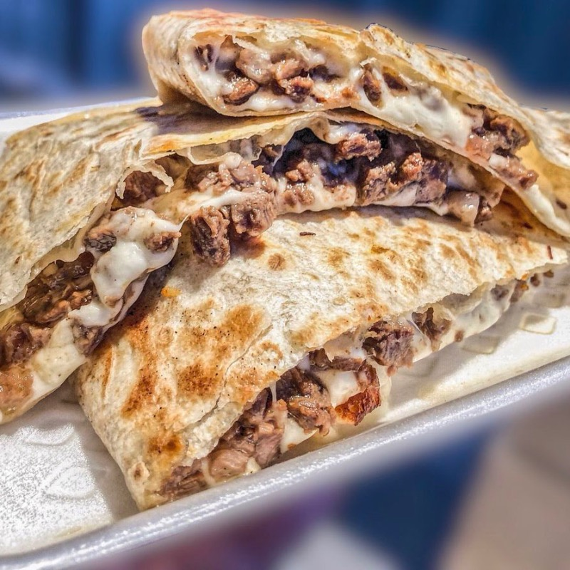
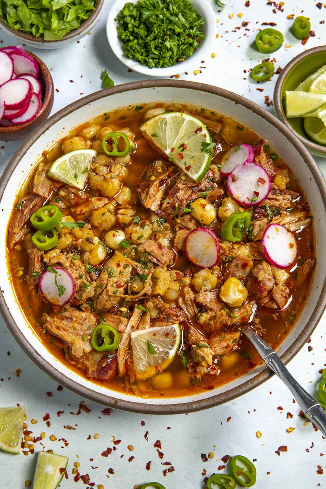
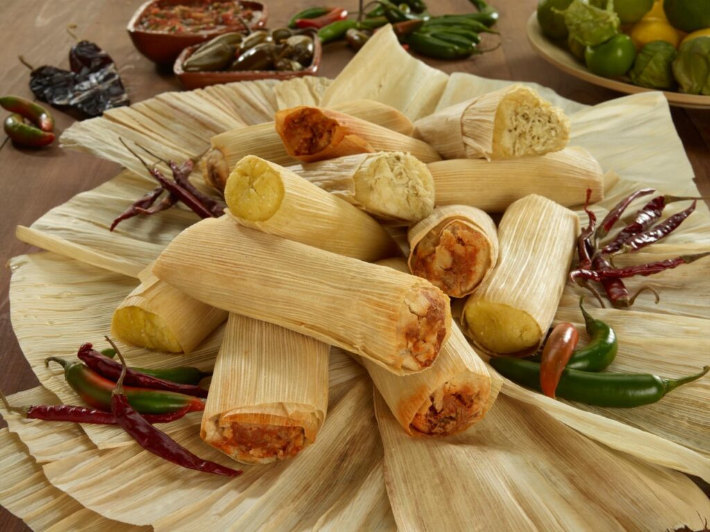

Mole #10
Mole can be consumed on a plate with rice and be scooped with a tortilla. Mole is often used in Tamales, burritos, and Tacos.
Enchiladas #9

Enchiladas are corn tortillas that have been cooked in a savory sauce wrapping around the meat of choice and sprinkled shredded cheese and lettuce on top.
Torta #8

Tortas are often consist with a type of meat like carnitas with guacamole, beans, lettuce in between two pieces of grilled bread.
Churros #7

Churros are a fried dough pastry that is coated with cinnamon and sugar and can be shaped either in a line, circular or even knotted.
@latinafoodiela Best Churros in La Puente!üá≤üáΩüî• IG: @churrosdonabel_elgordo üìç1545 N HACIENDA BLVD LA PUENTE, CA if you love authentic churros that are super soft, crispy, and chewy you gotta try these! üíï @churrosdonabel_elgordo they have delicious churros ice cream sandwiches,Gansito frappes, cafe de olla and more!‚úÖ üé¨ @latinafoodiela #lapuente #churros #latinafoodie ‚ô¨ original sound - Latina Foodie Finds
Quesadilla #6
Quesadillas are flour tortillas that have your cooked choice of meat with cheese and other fillings of choice and cooked on the stove top.
Burrito #5

Burritos consist of your meat of choice, rice, beans, onions and cilantro wrapped in a large flour tortilla. The fillings can be changed for breakfast items to like eggs, cheese and bacon bits to make a breakfast burrito.
Tacos #4

Tacos are generally made with a small tortilla with any choice of meat and fillings. They are the most versatile foods and can be made with almost anything!
Quesabirrias #3

Quesabirrias are crispy and savory tacos with birria meat melted with cheese inside the tortilla. They are often served with a broth to dip tortillas inside.
Posole Rojo #2
Posole Rojo is a red soup with hominy and meat; often pork shoulder and sprinkled with lettuce, radishes among other things.
Tamale #1
Tamales are steamed or pressure cooked masa with a mole and meat inside. It is the best seasonal foods for Thanksgiving and Christmas!